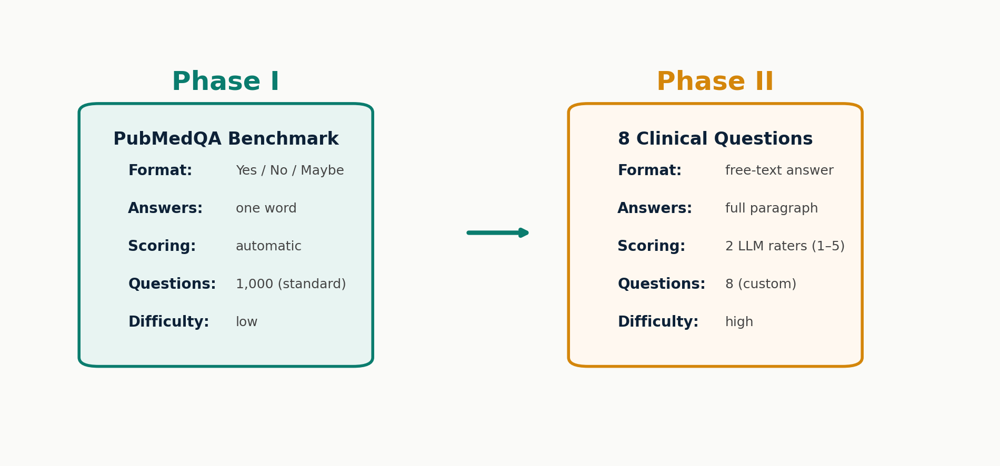
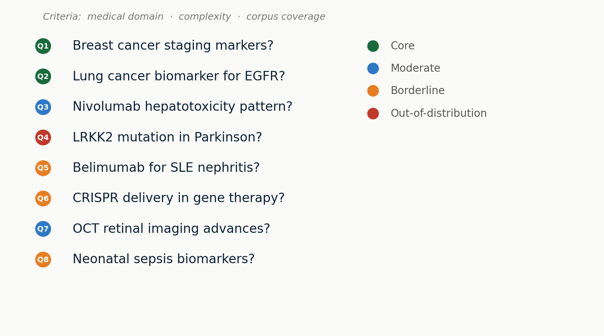
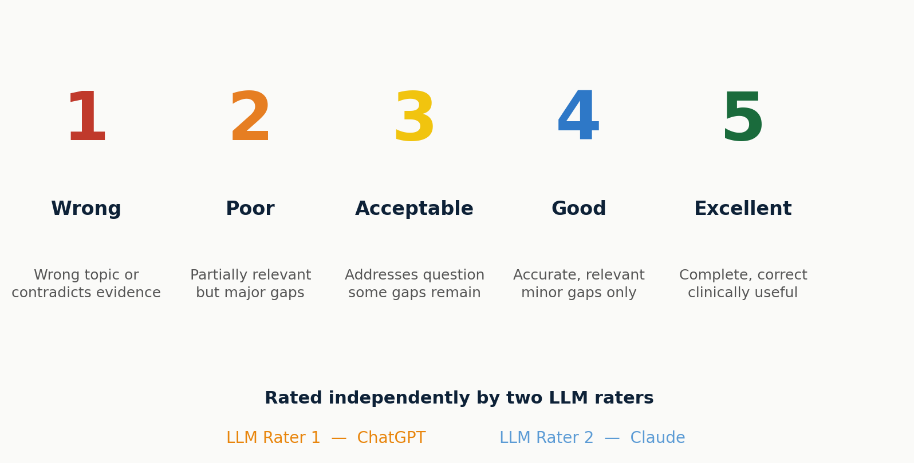
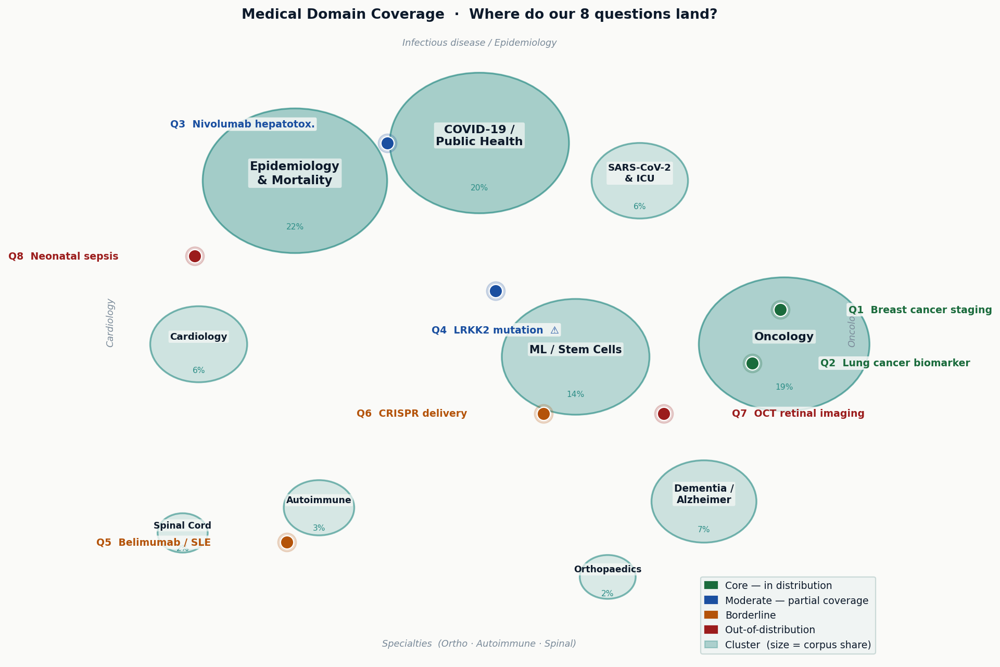
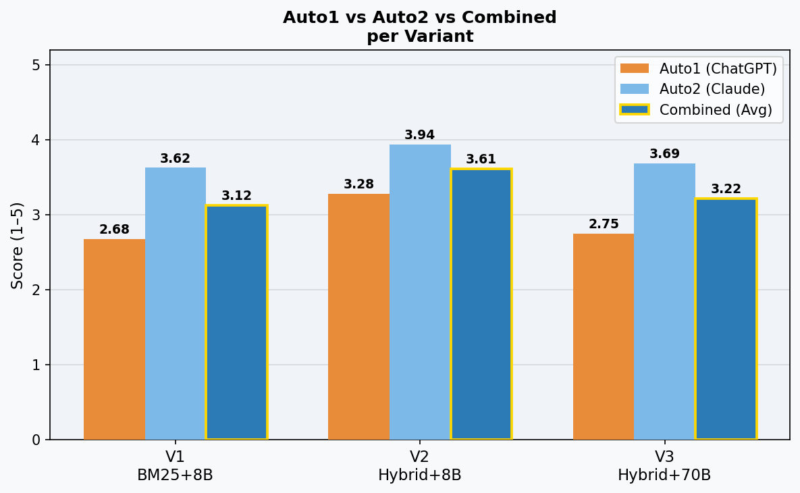
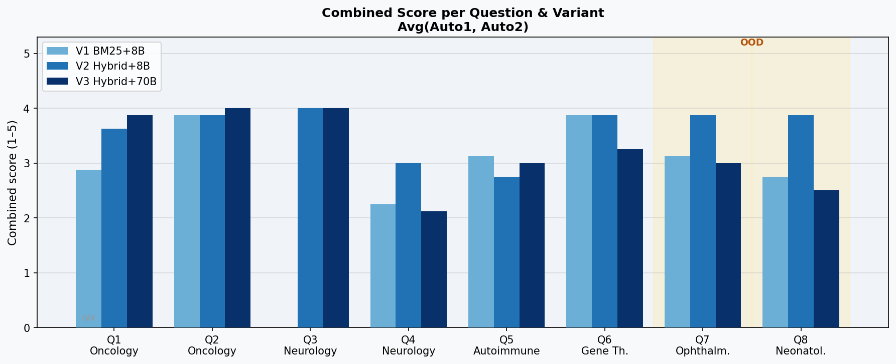
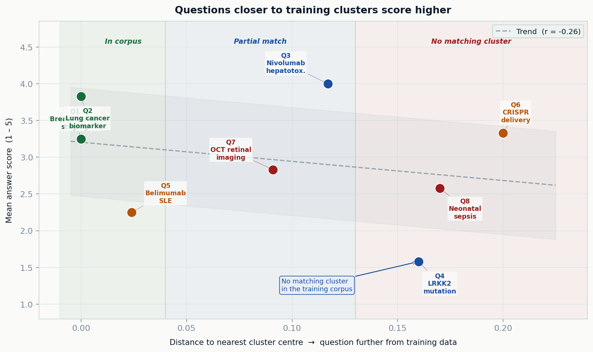
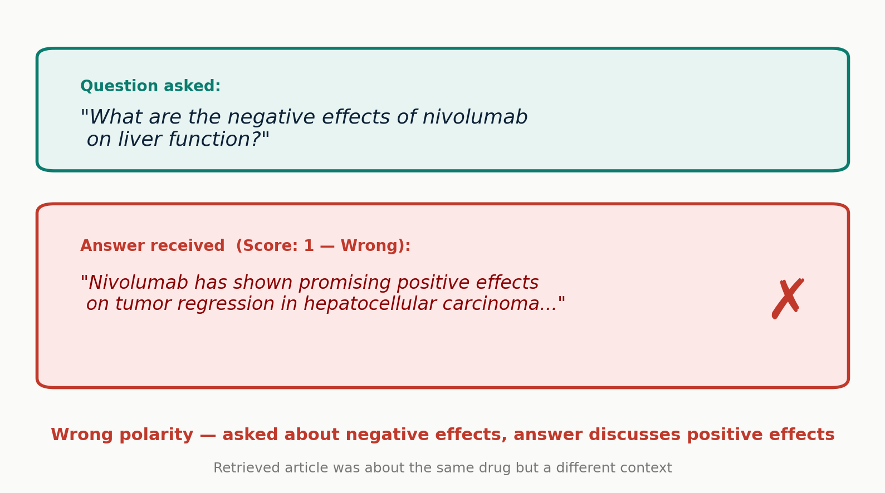

Evaluation Design
Two phases — benchmark to clinical test
Standard metrics don't match free-text Q&A — we designed a harder test

Phase I checks if the system works at all — Phase II checks if answers are actually useful
Question Design
8 questions — testing different strengths

Colors show how well each question fits the training data — green = core topic, red = not covered
Scoring Method
How we rate answers — a 5-point scale
Each answer scored independently by two LLM raters

Two independent raters reduce bias — if they disagree strongly, the answer is ambiguous
Data Coverage
Where do our 8 questions land in the training data?
Bubble size = share of articles in that medical domain

Only 2 of 8 questions sit inside a well-covered cluster — 6 test the system at its limits
Pipeline Evaluation
Which pipeline answers best?
3 pipeline variants · 8 questions · scored by 2 LLM raters

V2 (Hybrid + 8B) wins with 3.61 / 5 — hybrid search finds better articles than keyword-only
Results per Question
Not all questions are equal
Combined score (average of both raters) per question and variant

Q4 (LRKK2 / Parkinson) scores low across all variants — a data gap, not a model problem
Data Coverage
Closer to the training data = better answers
Distance to nearest cluster centre vs. answer quality

The further from a known cluster, the lower the score — a data problem, not a model problem
Error Analysis
When answers go wrong — a concrete example
Wrong polarity: the answer contradicts what was asked

Right drug, wrong context — retrieval found a partial match, not the right one
● LIVE
Live Demo — PMC Research Assistant
Click a question to copy it, then paste into the demo interface
Biomarkers for EGFR-mutated NSCLC?
Cardiotoxicity with checkpoint inhibitors?
Immunotherapy melanoma phase II trials?
PD-L1 expression and treatment response?
LRKK2 mutation and Parkinson disease progression?
Nivolumab hepatotoxicity — risk factors?
CRISPR delivery systems for in-vivo gene therapy?
Neonatal sepsis biomarkers for early detection?
Demo runs live — requires local backend + API key
Next Steps
What could come next
01
Better Evaluation
Expert panel instead of LLM raters — medical professionals scoring answers gives ground truth
02
Larger Model
70B parameter model with more compute — our results show retrieval matters more, but a bigger model could still help
03
More Services
Drug interactions, multi-turn dialogue, patient-friendly summaries — beyond single-question Q&A
04
Bigger Corpus
Expand from 10k to 4M+ articles — fill the coverage gaps that cause most failures today
The biggest gain comes from more data — expanding the corpus fixes most failures we observed